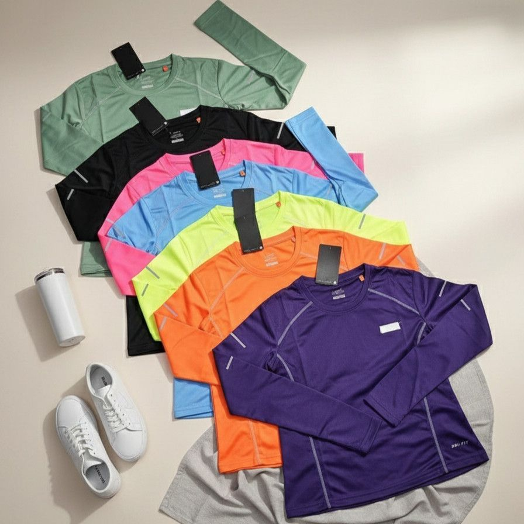
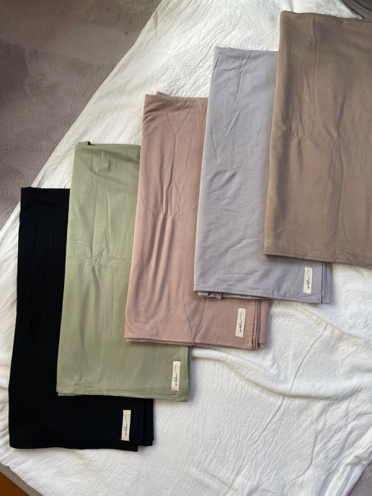
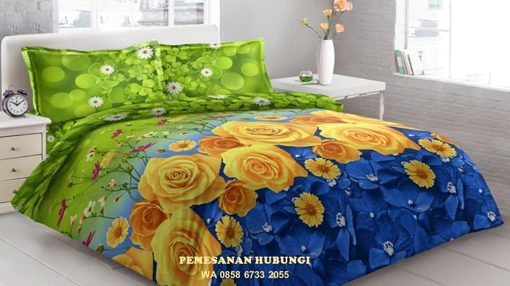
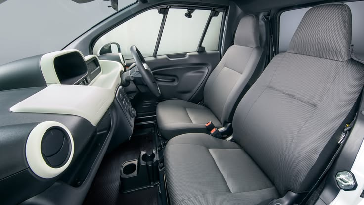
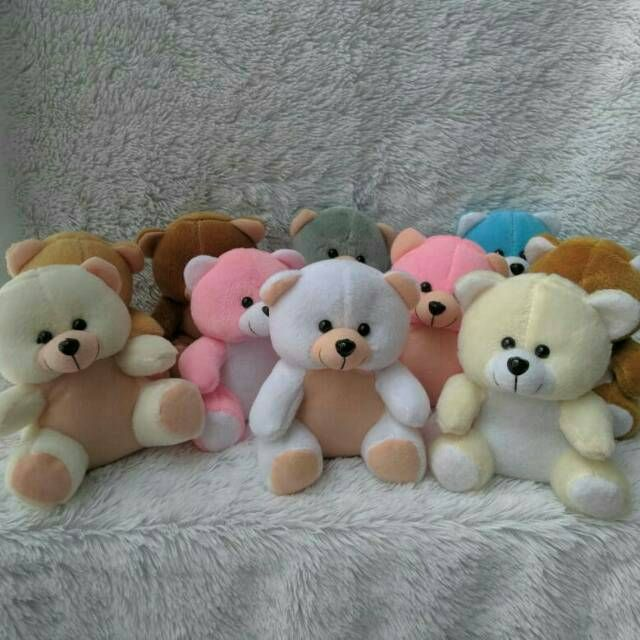

Pemanfaatan Produk DTY
Benang DTY (Draw Textured Yarn) merupakan salah satu produk utama PT Indorama Synthetics yang banyak dimanfaatkan sebagai bahan baku industri tekstil. Berikut beberapa contoh pemanfaatan DTY dalam kehidupan sehari-hari.

Pakaian Olahraga
DTY digunakan untuk membuat pakaian olahraga karena memiliki sifat elastis, ringan, nyaman dipakai, serta mampu menyerap keringat dengan baik.

Hijab
Kain berbahan DTY banyak digunakan sebagai bahan hijab karena teksturnya halus, nyaman digunakan, dan tidak mudah kusut.

Sprei dan Sarung Bantal
DTY dimanfaatkan dalam pembuatan sprei dan sarung bantal karena memiliki daya tahan yang baik serta mudah dirawat.

Tas dan Aksesoris
Serat polyester berbahan DTY dapat digunakan untuk membuat tas, dompet, dan berbagai aksesoris karena kuat serta tahan terhadap kelembapan.

Interior Kendaraan
DTY dimanfaatkan sebagai bahan pelapis jok kendaraan karena memiliki ketahanan terhadap gesekan dan umur pakai yang panjang.

Boneka dan Bantal
Serat polyester hasil pengolahan DTY juga digunakan sebagai bahan pengisi boneka, bantal, dan perlengkapan rumah tangga lainnya.